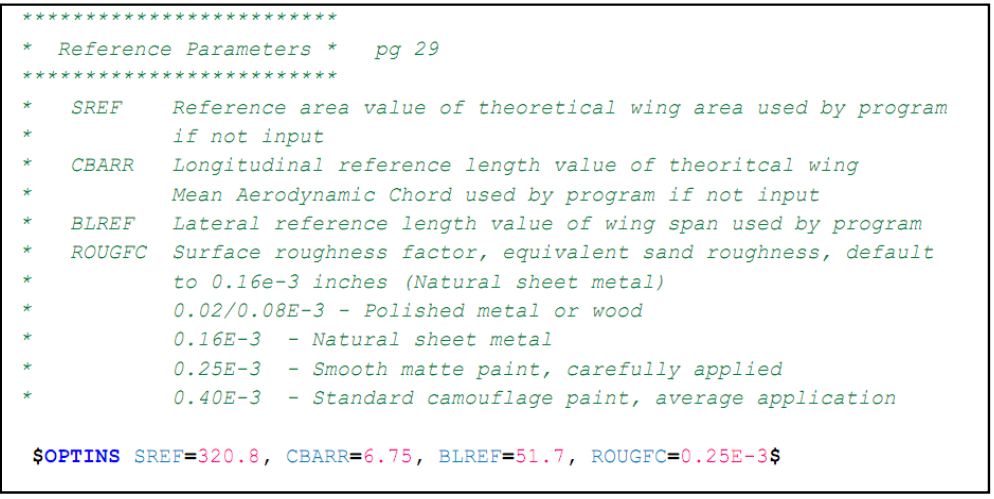
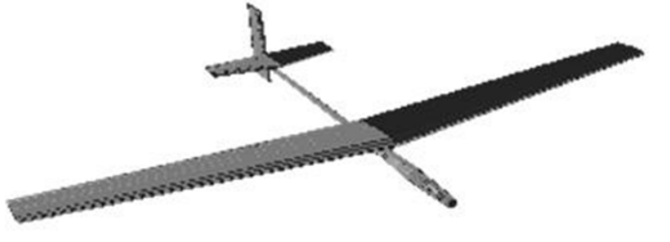
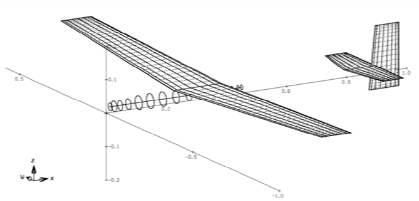
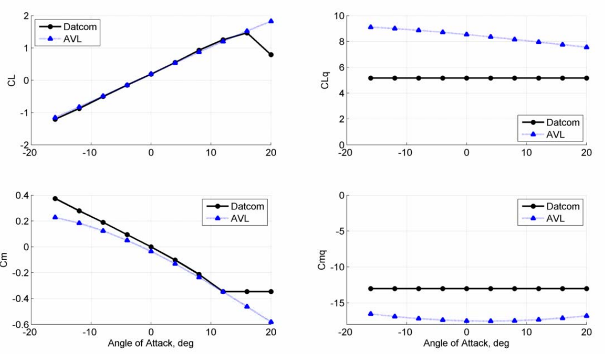
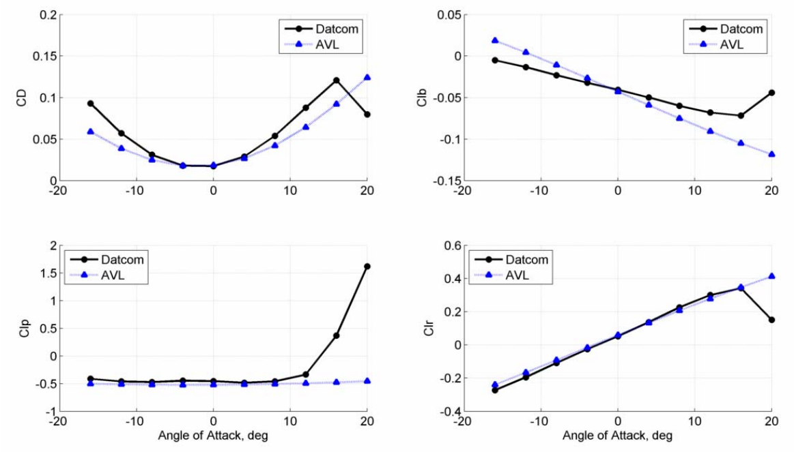
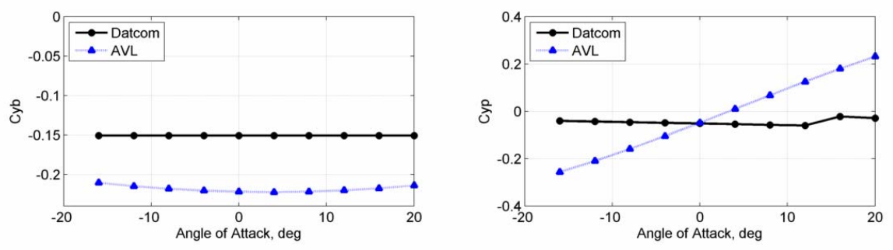
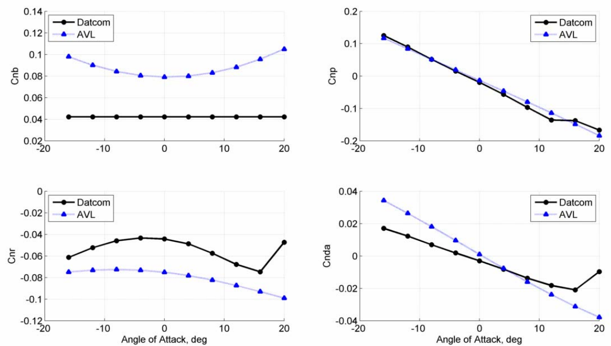

气动估算软件
AVL
AVL 3.30 User Primer last update 18 Aug 10
Mark Drela, MIT Aero & Astro
Harold Youngren, Aerocraft, Inc.
History
=======
AVL (Athena Vortex Lattice) 1.0 was originally written by Harold Youngren
circa 1988 for the MIT Athena TODOR aero software collection. The code was
based on classic work by Lamar (NASA codes), E. Lan and L. Miranda (VORLAX)
and a host of other investigators. Numerous modifications have since been
added by Mark Drela and Harold Youngren, to the point where only stubborn
traces of the original Athena code remain.
General Description
===================
AVL 3.xx now has a large number of features intended for rapid
aircraft configuration analysis. The major features are as follows:
Aerodynamic components
Lifting surfaces
Slender bodies
Configuration description
Keyword-driven geometry input file
Defined sections with linear interpolation
Section properties
camberline is NACA xxxx, or from airfoil file
control deflections
parabolic profile drag polar, Re-scaling
Scaling, translation, rotation of entire surface or body
Duplication of entire surface or body
Singularities
Horseshoe vortices (surfaces)
Source+doublet lines (bodies)
Finite-core option
Discretization
Uniform
Sine
Cosine
Blend
Control deflections
Via normal-vector tilting
Leading edge flaps
Trailing edge flaps
Hinge lines independent of discretization
General freestream description
alpha,beta flow angles
p,q,r aircraft rotation components
Subsonic Prandtl-Glauert compressibility treatment
Surfaces can be defined to “see” only perturbation velocities
(not freestream) to allow simulation of
ground effect
wind tunnel wall interference
influence of other nearby aircraft
Aerodynamic outputs
Direct forces and moments
Trefftz-plane
Derivatives of forces and moments, w.r.t freestream, rotation, controls
In body or stability axes
Trim calculation
Operating variables
alpha,beta
p,q,r
control deflections
Constraints
direct constraints on variables
indirect constraints via specified CL, moments
Multiple trim run cases can be defined
Saving of trim run case setups for later recall
Optional mass definition file (only for trim setup, eigenmode analysis)
User-chosen units
Itemized component location, mass, inertias
Trim setup of constraints
level or banked horizontal flight
steady pitch rate (looping) flight
Eigenmode analysis
Rigid-body analysis with quasi-steady aero model
Display of eigenvalue root progression with a parameter
Display of eigenmode motion in real time
Output of dynamic system matrices
Vortex-Lattice Modeling Principles
==================================
Like any computational method, AVL has limitations on what it can do.
These must be kept in mind in any given application.
Configurations
A vortex-lattice model like AVL is best suited for aerodynamic configurations
which consist mainly of thin lifting surfaces at small angles of attack
and sideslip. These surfaces and their trailing wakes are represented
as single-layer vortex sheets, discretized into horseshoe vortex filaments,
whose trailing legs are assumed to be parallel to the x-axis. AVL provides
the capability to also model slender bodies such as fuselages and nacelles
via source+doublet filaments. The resulting force and moment predictions
are consistent with slender-body theory, but the experience with this model
is relatively limited, and hence modeling of bodies should be done with
caution. If a fuselage is expected to have little influence on the
aerodynamic loads, it’s simplest to just leave it out of the AVL model.
However, the two wings should be connected by a fictitious wing portion
which spans the omitted fuselage.
Unsteady flow
AVL assumes quasi-steady flow, meaning that unsteady vorticity shedding
is neglected. More precisely, it assumes the limit of small reduced frequency,
which means that any oscillatory motion (e.g. in pitch) must be slow enough
so that the period of oscillation is much longer than the time it takes
the flow to traverse an airfoil chord. This is true for virtually any
expected flight maneuver. Also, the roll, pitch, and yaw rates used
in the computations must be slow enough so that the resulting relative
flow angles are small. This can be judged by the dimensionless
rotation rate parameters, which should fall within the following
practical limits.
-0.10 \< pb/2V \< 0.10
-0.03 \< qc/2V \< 0.03
-0.25 \< rb/2V \< 0.25
These limits represent extremely violent aircraft motion, and are unlikely
to exceeded in any typical flight situation, except possibly during
low-airspeed aerobatic maneuvers. In any case, if any of these
parameters falls outside of these limits, the results should be
interpreted with caution.
Compressibility
Compressibility is treated in AVL using the classical Prandtl-Glauert (PG)
transformation, which converts the PG equation to the Laplace equation,
which can then be solved by the basic incompressible method. This
is equivalent to the compressible continuity equation, with the assumptions
of irrotationality and linearization about the freestream. The forces
are computed by applying the Kutta-Joukowsky relation to each vortex,
this remaining valid for compressible flow.
The linearization assumes small perturbations (thin surfaces) and is not
completely valid when velocity perturbations from the free-stream become
large. The relative importance of compressible effects can be judged by
the PG factor 1/B = 1/sqrt(1 - M^2), where “M” is the freestream Mach
number. A few values are given in the table, which shows the expected
range of validity.
M 1/B
0.0 1.000 |
0.1 1.005 |
0.2 1.021 |
0.3 1.048 |- PG expected valid
0.4 1.091 |
0.5 1.155 |
0.6 1.250 |
0.7 1.400 PG suspect (transonic flow likely)
0.8 1.667 PG unreliable (transonic flow certain)
0.9 2.294 PG hopeless
For swept-wing configurations, the validity of the PG model
is best judged using the wing-perpendicular Mach number
Mperp = M cos(sweep)
Since Mperp \< M, swept-wing cases can be modeled up to higher
M values than unswept cases. For example, a 45 degree swept wing
operating at freestream M = 0.8 has
Mperp = 0.8 * cos(45) = 0.566
which is still within the expected range of PG validity
in the above table. So reasonable results can be expected
from AVL for this case.
When doing velocity parameter sweeps at the lowest Mach numbers,
say below M = 0.2, it is best to simply hold M = 0. This will
greatly speed up the calculations, since changing the Mach number
requires recomputation and re-factorization of the VL influence matrix,
which consumes most of the computational effort. If the Mach number
is held fixed, this computation needs to be done only once.
Input Files
===========
AVL works with three input files, all in plain text format. Ideally
these all have a common arbitrary prefix “xxx”, and the following extensions:
xxx.avl required main input file defining the configuration geometry
xxx.mass optional file giving masses and inertias, and dimensional units
xxx.run optional file defining the parameter for some number of run cases
The user provides files xxx.avl and xxx.mass, which are typically created
using any text editor. Sample files are provided for use as templates.
The xxx.run file is written by AVL itself with a user command.
It can be manually edited, although this is not really necessary
since it is more convenient to edit the contents in AVL and then
write out the file again.
Geometry Input File — xxx.avl
==============================
This file describes the vortex lattice geometry and aerodynamic
section properties. Sample input files are in the /runs subdirectory.
Coordinate system
The geometry is described in the following Cartesian system:
X downstream
Y out the right wing
Z up
The freestream must be at a reasonably small angle to the X axis
(alpha and beta must be small), since the trailing vorticity
is oriented parallel to the X axis. The length unit used in
this file is referred to as “Lunit”. This is arbitrary,
but must be the same throughout this file.
File format
Header data
- - - - - -
The input file begins with the following information in the first 5 non-blank,
non-comment lines:
Abc… | case title
# | comment line begins with “#” or “!”
0.0 | Mach
1 0 0.0 | iYsym iZsym Zsym
4.0 0.4 0.1 | Sref Cref Bref
0.1 0.0 0.0 | Xref Yref Zref
0.020 | CDp (optional)
Mach = default freestream Mach number for Prandtl-Glauert correction
iYsym = 1 case is symmetric about Y=0 , (X-Z plane is a solid wall)
= -1 case is antisymmetric about Y=0, (X-Z plane is at const. Cp)
= 0 no Y-symmetry is assumed
iZsym = 1 case is symmetric about Z=Zsym , (X-Y plane is a solid wall)
= -1 case is antisymmetric about Z=Zsym, (X-Y plane is at const. Cp)
= 0 no Z-symmetry is assumed (Zsym ignored)
Sref = reference area used to define all coefficients (CL, CD, Cm, etc)
Cref = reference chord used to define pitching moment (Cm)
Bref = reference span used to define roll,yaw moments (Cl,Cn)
X,Y,Zref = default location about which moments and rotation rates are defined
(if doing trim calculations, XYZref must be the CG location,
which can be imposed with the MSET command described later)
CDp = default profile drag coefficient added to geometry, applied at XYZref
(assumed zero if this line is absent, for previous-version compatibility)
The default Mach, XYZref, and CDp values are superseded by the values
in the .run file (described later), if it is present. They can also
be changed at runtime.
Only the half (non-image) geometry must be input if symmetry is specified.
Ground effect is simulated with iZsym = 1, and Zsym = location of ground.
Forces are not calculated on the image/anti-image surfaces.
Sref and Bref are assumed to correspond to the total geometry.
In practice there is little reason to run Y-symmetric image cases,
unless one is desperate for CPU savings.
Surface and Body data
- - - - - - - - - - -
The remainder of the file consists of a set of keywords and associated data.
Each keyword expects a certain number of lines of data to immediately follow
it, the exception being inline-coordinate keyword AIRFOIL which is followed
by an arbitrary number of coordinate data lines. The keywords must also be
nested properly in the hierarchy shown below. Only the first four characters
of each keyword are actually significant, the rest are just a mnemonic.
SURFACE
COMPONENT (or INDEX)
YDUPLICATE
SCALE
TRANSLATE
ANGLE
NOWAKE
NOALBE
NOLOAD
SECTION
SECTION
NACA
SECTION
AIRFOIL
CLAF
CDCL
SECTION
AFILE
CONTROL
CONTROL
BODY
YDUPLICATE
SCALE
TRANSLATE
BFILE
SURFACE
YDUPLICATE
SECTION
SECTION
SURFACE
.
.
etc.
The COMPONENT (or INDEX), YDUPLICATE, SCALE, TRANSLATE, and ANGLE keywords
can all be used together. If more than one of these appears for
a surface, the last one will be used and the previous ones ignored.
At least two SECTION keywords must be used for each surface.
The NACA, AIRFOIL, AFILE, keywords are alternatives.
If more than one of these appears after a SECTION keyword,
the last one will be used and the previous ones ignored. i.e.
SECTION
NACA
AFILE
is equivalent to
SECTION
AFILE
Multiple CONTROL keywords can appear after a SECTION keyword and data
Surface-definition keywords and data formats
- - - - - - - - - - - - - - - - - - - - - - -
*****
SURFACE | (keyword)
Main Wing | surface name string
12 1.0 20 -1.5 | Nchord Cspace [ Nspan Sspace ]
The SURFACE keyword declares that a surface is being defined until
the next SURFACE or BODY keyword, or the end of file is reached.
A surface does not really have any significance to the underlying
AVL vortex lattice solver, which only recognizes the overall
collection of all the individual horseshoe vortices. SURFACE
is provided only as a configuration-defining device, and also
as a means of defining individual surface forces. This is
necessary for structural load calculations, for example.
Nchord = number of chordwise horseshoe vortices placed on the surface
Cspace = chordwise vortex spacing parameter (described later)
Nspan = number of spanwise horseshoe vortices placed on the surface [optional]
Sspace = spanwise vortex spacing parameter (described later) [optional]
If Nspan and Sspace are omitted (i.e. only Nchord and Cspace are present on line),
then the Nspan and Sspace parameters will be expected for each section interval,
as described later.
*****
COMPONENT | (keyword) or INDEX
3 | Lcomp
This optional keywords COMPONENT (or INDEX for backward compatibility)
allows multiple input SURFACEs to be grouped together into a composite
virtual surface, by assigning each of the constituent surfaces the same
Lcomp value. Application examples are:
- A wing component made up of a wing and a winglet.
- A T-tail component made up of horizontal and vertical tail surfaces.
A common Lcomp value instructs AVL to _not_ use a finite-core model
for the influence of a horseshoe vortex and a control point which lies
on the same component, as this would seriously corrupt the calculation.
If each COMPONENT is specified via only a single SURFACE block,
then the COMPONENT (or INDEX) declaration is unnecessary.
*****
YDUPLICATE | (keyword)
0.0 | Ydupl
The YDUPLICATE keyword is a convenient shorthand device for creating
another surface which is a geometric mirror image of the one
being defined. The duplicated surface is _not_ assumed to be
an aerodynamic image or anti-image, but is truly independent.
A typical application would be for cases which have geometric
symmetry, but not aerodynamic symmetry, such as a wing in yaw.
Defining the right wing together with YDUPLICATE will conveniently
create the entire wing.
The YDUPLICATE keyword can _only_ be used if iYsym = 0 is specified.
Otherwise, the duplicated real surface will be identical to the
implied aerodynamic image surface, and velocities will be computed
directly on the line-vortex segments of the images. This will
almost certainly produce an arithmetic fault.
The duplicated surface gets the same Lsurf value as the parent surface,
so they are considered to be the same physical surface. There is
no significant effect on the results if they are in reality
two physical surfaces.
Ydupl = Y position of X-Z plane about which the current surface is
reflected to make the duplicate geometric-image surface.
*****
SCALE | (keyword)
1.0 1.0 0.8 | Xscale Yscale Zscale
The SCALE allows convenient rescaling for the entire surface.
The scaling is applied before the TRANSLATE operation described below.
Xscale,Yscale,Zscale = scaling factors applied to all x,y,z coordinates
(chords are also scaled by Xscale)
*****
TRANSLATE | (keyword)
10.0 0.0 0.5 | dX dY dZ
The TRANSLATE keyword allows convenient relocation of the entire
surface without the need to change the Xle,Yle,Zle locations
for all the defining sections. A body can be translated without
the need to modify the body shape coordinates.
dX,dY,dZ = offset added on to all X,Y,Z values in this surface.
*****
ANGLE | (keyword)
2.0 | dAinc
The ANGLE keyword allows convenient changing of the incidence angle
of the entire surface without the need to change the Ainc values
for all the defining sections. The rotation is performed about
the spanwise axis projected onto the y-z plane.
dAinc = offset added on to the Ainc values for all the defining sections
in this surface
*****
NOWAKE | (keyword)
The NOWAKE keyword specifies that this surface is to NOT shed a wake,
so that its strips will not have their Kutta conditions imposed.
Such a surface will have a near-zero net lift, but it will still
generate a nonzero moment.
*****
NOALBE | (keyword)
The NOALBE keyword specifies that this surface is unaffected by
freestream direction changes specified by the alpha,beta angles
and p,q,r rotation rates. This surface then reacts to only to
the perturbation velocities of all the horseshoe vortices and
sources and doublets in the flow.
This allows the SURFACE/NOALBE object to model fixed surfaces such
as a ground plane, wind tunnel walls, or a nearby other aircraft
which is at a fixed flight condition.
*****
NOLOAD | (keyword)
The NOLOAD keyword specifies that the force and moment on this surface
is to NOT be included in the overall forces and moments of the configuration.
This is typically used together with NOALBE, since the force on a ground
plane or wind tunnel walls certainly is not to be considered as part
of the aircraft force of interest.
*****
The following keyword declarations would be used in envisioned applications.
1) Non-lifting fuselage modeled by its side-view and top-view profiles.
This will capture the moment of the fuselage reasonably well.
NOWAKE
2) Another nearby aircraft, with both aircraft maneuvering together.
This would be for trim calculation in formation flight.
NOALBE
NOLOAD
3) Another nearby aircraft, with only the primary aircraft maneuvering.
This would be for a flight-dynamics analysis in formation flight.
NOLOAD
4) Nearby wind tunnel walls or ground plane.
NOALBE
NOLOAD
*****
SECTION | (keyword)
0.0 5.0 0.2 0.50 1.50 5 -2.0 | Xle Yle Zle Chord Ainc [ Nspan Sspace ]
The SECTION keyword defines an airfoil-section camber line at some
spanwise location on the surface.
Xle,Yle,Zle = airfoil’s leading edge location
Chord = the airfoil’s chord (trailing edge is at Xle+Chord,Yle,Zle)
Ainc = incidence angle, taken as a rotation (+ by RH rule) about
the surface’s spanwise axis projected onto the Y-Z plane.
Nspan = number of spanwise vortices until the next section [ optional ]
Sspace = controls the spanwise spacing of the vortices [ optional ]
Nspan and Sspace are used here only if the overall Nspan and Sspace
for the whole surface is not specified after the SURFACE keyword.
The Nspan and Sspace for the last section in the surface are always ignored.
Note that Ainc is used only to modify the flow tangency boundary
condition on the airfoil camber line, and does not rotate the geometry
of the airfoil section itself. This approximation is consistent with
linearized airfoil theory.
The local chord and incidence angle are linearly interpolated between
defining sections. Obviously, at least two sections (root and tip)
must be specified for each surface.
The default airfoil camber line shape is a flat plate. The NACA, AIRFOIL,
and AFIL keywords, described below, are available to define non-flat
camber lines. If one of these is used, it must immediately follow
the data line of the SECTION keyword.
All the sections in the surface must be defined in order across the span.
*****
NACA | (keyword)
4300 | section NACA camberline
The NACA keyword sets the camber line to the NACA 4-digit shape specified
*****
AIRFOIL X1 X2 |(keyword) [ optional x/c range ]
1.0 0.0 | x/c(1) y/c(1)
0.98 0.002 | x/c(2) y/c(2)
. . | . .
. . | . .
. . | . .
1.0 -0.01 | x/c(N) y/c(N)
The AIRFOIL keyword declares that the airfoil definition is input
as a set of x/c, y/c pairs.
x/c,y/c = airfoil coordinates
The x/c, y/c coordinates run from TE, to LE, back to the TE again
in either direction. These corrdinates are splined, and the slope
of the camber y(x) function is obtained from the middle y/c values
between top and bottom. The number of points N is deterimined
when a line without two readable numbers is encountered.
If present, the optional X1 X2 parameters indicate that only the
x/c range X1..X2 from the coordinates is to be assigned to the surface.
If the surface is a 20%-chord flap, for example, then X1 X2
would be 0.80 1.00. This allows the camber shape to be easily
assigned to any number of surfaces in piecewise manner.
*****
AFILE X1 X2 | (keyword) [ optional x/c range ]
filename | filename string
The AFILE keyword is essentially the same as AIRFOIL, except
that the x/c,y/c pairs are generated from a standard (XFOIL-type)
set of airfoil coordinates contained in the file “filename”.
The first line of this file is assumed to contain a string
with the name of the airfoil (as written out with XFOIL’s SAVE
command). If the path/filename has embedded blanks
double quotes should be used to delimit the string.
The optional X1 X2 parameters are used as in AIRFOIL.
*****
DESIGN | (keyword)
DName Wdes | design parameter name, local weight
This declares that the section angle Ainc is to be virtually
perturbed by a design parameter, with name DName and local
Wdes.
For example, declarations for design variables “twist1” and “bias1”
DESIGN
twist1 -0.5
DESIGN
bias1 1.0
Give an effective (virtual) section incidence that is set using the “twist1”
and “bias1” design variables as:
Ainc_total = Ainc - 0.5*twist1_value + 1.0*bias_value
where twist1_value and bias1_value are design parameters specified at runtime.
The sensitivities of the flow solution to design variable changes
can be displayed at any time during program execution. Hence,
design variables can be used to quickly investigate the effects
of twist changes on lift, moments, induced drag, etc.
Declaring the same design parameter with varying weights for multiple
sections in a surface allows the design parameter to represent a convenient
“design mode”, such as linear washout, which influences all sections.
*****
CONTROL | (keyword)
elevator 1.0 0.6 0. 1. 0. 1.0 | name, gain, Xhinge, XYZhvec, SgnDup
The CONTROL keyword declares that a hinge deflection at this section
is to be governed by one or more control variables. An arbitrary
number of control variables can be used, limited only by the array
limit NDMAX.
The data line quantities are…
name name of control variable
gain control deflection gain, units: degrees deflection / control variable
Xhinge x/c location of hinge.
If positive, control surface extent is Xhinge..1 (TE surface)
If negative, control surface extent is 0..-Xhinge (LE surface)
XYZhvec vector giving hinge axis about which surface rotates
+ deflection is + rotation about hinge by righthand rule
Specifying XYZhvec = 0. 0. 0. puts the hinge vector along the hinge
SgnDup sign of deflection for duplicated surface
An elevator would have SgnDup = +1
An aileron would have SgnDup = -1
Control derivatives will be generated for all control variables
which are declared.
More than one variable can contribute to the motion at a section.
For example, for the successive declarations
CONTROL
aileron 1.0 0.7 0. 1. 0. -1.0
CONTROL
flap 0.3 0.7 0. 1. 0. 1.0
the overall deflection will be
control_surface_deflection = 1.0 * aileron + 0.3 * flap
The same control variable can be used on more than one surface.
For example the wing sections might have
CONTROL
flap 0.3 0.7 0. 1. 0. 1.0
and the horizontal tail sections might have
CONTROL
flap 0.03 0.5 0. 1. 0. 1.0
with the latter simulating 10:1 flap -> elevator mixing.
A partial-span control surface is specified by declaring
CONTROL data only at the sections where the control surface
exists, including the two end sections. For example,
the following wing defined with three sections (i.e. two panels)
has a flap over the inner panel, and an aileron over the
outer panel.
SECTION
0.0 0.0 0.0 2.0 0.0 | Xle Yle Zle Chord Ainc
CONTROL
flap 1.0 0.80 0. 0. 0. 1 | name, gain, Xhinge, XYZhvec, SgnDup
SECTION
0.0 8.0 0.0 2.0 0.0 | Xle Yle Zle Chord Ainc
CONTROL
flap 1.0 0.80 0. 0. 0. 1 | name, gain, Xhinge, XYZhvec, SgnDup
CONTROL
aileron 1.0 0.85 0. 0. 0. -1 | name, gain, Xhinge, XYZhvec, SgnDup
SECTION
0.2 12.0 0.0 1.5 0.0 | Xle Yle Zle Chord Ainc
CONTROL
aileron 1.0 0.85 0. 0. 0. -1 | name, gain, Xhinge, XYZhvec, SgnDup
The control gain for a control surface does not need to be equal
at each section. Spanwise stations between sections receive a gain
which is linearly interpolated from the two bounding sections.
This allows specification of flexible-surface control systems.
For example, the following surface definition models wing warping
which is linear from root to tip. Note that the “hinge” is at x/c=0.0,
so that the entire chord rotates in response to the aileron deflection.
SECTION
0.0 0.0 0.0 2.0 0.0 | Xle Yle Zle Chord Ainc
CONTROL
aileron 0.0 0. 0. 0. 0. -1 | name, gain, Xhinge, XYZhvec, SgnDup
SECTION
0.2 12.0 0.0 1.5 0.0 | Xle Yle Zle Chord Ainc
CONTROL
aileron 1.0 0. 0. 0. 0. -1 | name, gain, Xhinge, XYZhvec, SgnDup
Non-symmetric control effects, such as Aileron Differential, can be specified
by a non-unity SgnDup magnitude. For example,
SECTION
0.0 6.0 0.0 2.0 0.0 | Xle Yle Zle Chord Ainc
CONTROL
aileron 1.0 0.7 0. 0. 0. -2.0 | name, gain, Xhinge, XYZhvec, SgnDup
SECTION
0.0 10.0 0.0 2.0 0.0 | Xle Yle Zle Chord Ainc
CONTROL
aileron 1.0 0.7 0. 0. 0. -2.0 | name, gain, Xhinge, XYZhvec, SgnDup
will result in the duplicated aileron having a deflection opposite and
2.0 times larger than the defined aileron. Note that this will have
the proper effect only in one direction. In the example above, the
two aileron surfaces deflect as follows:
Right control surface: 1.0*aileron = 1.0*aileron
Left control surface: 1.0*aileron*(-2.0) = -2.0*aileron
which is the usual way Aileron Differential is implemented if “aileron” is positive.
To get the same effect with a negative “aileron” control change,
the definitions would have to be as follows.
SECTION
0.0 6.0 0.0 2.0 0.0 | Xle Yle Zle Chord Ainc
CONTROL
aileron 2.0 0.7 0. 0. 0. -0.5 | name, gain, Xhinge, XYZhvec, SgnDup
SECTION
0.0 10.0 0.0 2.0 0.0 | Xle Yle Zle Chord Ainc
CONTROL
aileron 2.0 0.7 0. 0. 0. -0.5 | name, gain, Xhinge, XYZhvec, SgnDup
This then gives:
Right control surface: 2.0*aileron = -2.0*(-aileron)
Left control surface: 2.0*aileron*(-0.5) = 1.0*(-aileron)
which is the correct mirror image of the previous case if “aileron” is negative.
*****
CLAF | (keyword)
CLaf | dCL/da scaling factor
This scales the effective dcl/da of the section airfoil as follows:
dcl/da = 2 pi CLaf
The implementation is simply a chordwise shift of the control point
relative to the bound vortex on each vortex element.
The intent is to better represent the lift characteristics
of thick airfoils, which typically have greater dcl/da values
than thin airfoils. A good estimate for CLaf from 2D potential
flow theory is
CLaf = 1 + 0.77 t/c
where t/c is the airfoil’s thickness/chord ratio. In practice,
viscous effects will reduce the 0.77 factor to something less.
Wind tunnel airfoil data or viscous airfoil calculations should
be consulted before choosing a suitable CLaf value.
If the CLAF keyword is absent for a section, CLaf defaults to 1.0,
giving the usual thin-airfoil lift slope dcl/da = 2 pi.
*****
CDCL | (keyword)
CL1 CD1 CL2 CD2 CL3 CD3 | CD(CL) function parameters
The CDCL keyword specifies a simple profile-drag CD(CL) function
for this section. The function is parabolic between CL1..CL2 and
CL2..CL3, with rapid increases in CD below CL1 and above CL3.
See the SUBROUTINE CDCL header (in cdcl.f) for more details.
The CD(CL) function is interpolated for stations in between
defining sections. Hence, the CDCL declaration on any surface
must be used either for all sections or for none.
Body-definition keywords and data formats
- - - - - - - - - - - - - - - - - - - - -
*****
BODY | (keyword)
Fuselage | body name string
15 1.0 | Nbody Bspace
The BODY keyword declares that a body is being defined until
the next SURFACE or BODY keyword, or the end of file is reached.
A body is modeled with a source+doublet line along its axis,
in accordance with slender-body theory.
Nbody = number of source-line nodes
Bspace = lengthwise node spacing parameter (described later)
*****
YDUPLICATE | (keyword)
0.0 | Ydupl
Same function as for a surface, described earlier.
*****
SCALE | (keyword)
1.0 1.0 0.8 | Xscale Yscale Zscale
Same function as for a surface, described earlier.
*****
TRANSLATE | (keyword)
10.0 0.0 0.5 | dX dY dZ
Same function as for a surface, described earlier.
*****
BFILE | (keyword)
filename | filename string
This specifies the shape of the body as an “airfoil” file
which gives the top or side view of the body, which is
assumed to have a round cross-section. Hence, the diameter
of the body is the difference between the top and bottom
Y values. Bodies which are not round must be approximated
with an equivalent round body which has roughly the same
cross-sectional areas. If the path/filename has embedded blanks
double quotes should be used to delimit the string.
Vortex Lattice Spacing Distributions
Discretization of the geometry into vortex lattice panels
is controlled by the spacing parameters described earlier:
Sspace, Cspace, Bspace
These must fall in the range -3.0 … +3.0 , and they
determine the spanwise and lengthwise horseshoe vortex
or body line node distributions as follows:
parameter spacing
3.0 equal | | | | | | | | |
2.0 sine || | | | | | | |
1.0 cosine || | | | | | ||
0.0 equal | | | | | | | | |
-1.0 cosine || | | | | | ||
-2.0 -sine | | | | | | | ||
-3.0 equal | | | | | | | | |
Sspace (spanwise) : first section ==> last section
Cspace (chordwise) : leading edge ==> trailing edge
Bspace (lengthwise): frontmost point ==> rearmost point
An intermediate parameter value will result in a blended distribution.
The most efficient distribution (best accuracy for a given number of
vortices) is usually the cosine (1.0) chordwise and spanwise. If the
wing does not have a significant chord slope discontinuity at the
centerline, such as a straight, elliptical, or slightly tapered wing,
then the -sine (-2.0) distribution from root to tip will be more
efficient. This is equivalent to a cosine distribution across the
whole span. The basic rule is that a tight chordwise distribution
is needed at the leading and trailing edges, and a tight spanwise
distribution is needed wherever the circulation is changing rapidly,
such as taper breaks, and especially at flap breaks and wingtips.
A number of vortex-spacing rules must be followed to get good results
from AVL, or any other vortex-lattice method:
1) In a standard VL method, a trailing vortex leg must not pass
close to a downstream control point, else the solution will be garbage.
In practice, this means that surfaces which are lined up along
the x direction (i.e. have the same or nearly the same y,z coordinates),
MUST have the same spanwise vortex spacing. AVL relaxes this requirement
by employing a finite core size for each vortex on a surface which is
influencing a control point in another aurface (unless the two surfaces
share the same COMPONENT declaration). This feature can be disabled
by setting the core size to zero in the OPER sub-menu, Option
sub-sub-menu, command C. This reverts AVL to the standard AVL method.
2) Spanwise vortex spacings should be “smooth”, with no sudden
changes in spanwise strip width. Adjust Nspan and Sspace parameters
to get a smooth distribution. Spacing should be bunched at
dihedral and chord breaks, control surface ends, and especially
at wing tips. If a single spanwise spacing distribution is specified
for a surface with multiple sections, the spanwise distribution
will be fudged as needed to ensure that a point falls exactly
on the section location. Increase the number of spanwise points
if the spanwise spacing looks ragged because of this fudging.
3) If a surface has a control surface on it, an adequate number
of chordwise vortices Nchord should be used to resolve the
discontinuity in the camberline angle at the hingeline. It is
possible to define the control surface as a separate SURFACE
entity. Cosine chordwise spacings then produce bunched points
exactly at the hinge line, giving the best accuracy. The two
surfaces must be given the same COMPONENT and the same spanwise point
spacing for this to work properly. Such extreme measures are
rarely necessary in practice, however. Using a single surface
with extra chordwise spacing is usually sufficient.
4) When attempting to increase accuracy by using more vortices,
it is in general necessary to refine the vortex spacings in both
the spanwise AND in the chordwise direction. Refining only
along one direction may not converge to the correct result,
especially locally wherever the bound vortex line makes a sudden bend,
such as a dihedral break, or at the center of a swept wing.
In some special configurations, such as an unswept planar wing,
the chordwise spacing may not need to be refined at all to
get good accuracy, but for most cases the chordwise spacing
will be significant.
Mass Input File — xxx.mass
===========================
This optional file describes the mass and inertia properties of the
configuration. It also defines units to be used for run case setup.
These units may want to be different than those used to define
the geometry. Sample input xxx.mass files are in the /runs subdirectory.
Coordinate system
The geometry axes used in the xxx.mass file are exactly the same as those used
in the xxx.avl file.
File format
A sample file for an RC glider is shown below. Comment lines begin with a “#”.
Everything after and including a “!” is ignored. Blank lines are ignored.
# SuperGee
#
# Dimensional unit and parameter data.
# Mass & Inertia breakdown.
# Names and scalings for units to be used for trim and eigenmode calculations.
# The Lunit and Munit values scale the mass, xyz, and inertia table data below.
# Lunit value will also scale all lengths and areas in the AVL input file.
Lunit = 0.0254 m
Munit = 0.001 kg
Tunit = 1.0 s
#————————————-
# Gravity and density to be used as default values in trim setup (saves runtime typing).
# Must be in the unit names given above (i.e. m,kg,s).
g = 9.81
rho = 1.225
#————————————-
# Mass & Inertia breakdown.
# x y z is location of item’s own CG.
# Ixx… are item’s inertias about item’s own CG.
#
# x,y,z system here must be exactly the same one used in the .avl input file
# (same orientation, same origin location, same length units)
#
# mass x y z Ixx Iyy Izz [ Ixy Ixz Iyz ]
* 1. 1. 1. 1. 1. 1. 1. 1. 1. 1.
+ 0. 0. 0. 0. 0. 0. 0. 0. 0. 0.
58.0 3.34 12.0 1.05 4400 180 4580 ! right wing
58.0 3.34 -12.0 1.05 4400 180 4580 ! left wing
16.0 -5.2 0.0 0.0 0 80 80 ! fuselage pod
18.0 13.25 0.0 0.0 0 700 700 ! boom+rods
22.0 -7.4 0.0 0.0 0 0 0 ! battery
2.0 -2.5 0.0 0.0 0 0 0 ! jack
9.0 -3.8 0.0 0.0 0 0 0 ! RX
9.0 -5.1 0.0 0.0 0 0 0 ! rud servo
6.0 -5.9 0.0 0.0 0 0 0 ! ele servo
9.0 2.6 1.0 0.0 0 0 0 ! R wing servo
9.0 2.6 -1.0 0.0 0 0 0 ! L wing servo
2.0 1.0 0.0 0.5 0 0 0 ! wing connector
1.0 3.0 0.0 0.0 0 0 0 ! wing pins
6.0 29.0 0.0 1.0 70 2 72 ! stab
6.0 33.0 0.0 2.0 35 39 4 ! rudder
0.0 -8.3 0.0 0.0 0 0 0 ! nose wt.
Units
- - -
The first three lines
Lunit = 0.0254 m
Munit = 0.001 kg
Tunit = 1.0 s
give the magnitudes and names of the units to be used for run case setup
and possibly for eigenmode calculations. In this example, standard SI units
(m,kg,s) are chosen. But the data in xxx.avl and xxx.mass is given in units
of Lunit = 1 inch, which is therefore declared here to be equal to “0.0254 m”.
If the data was given in centimeters, the statement would read
Lunit = 0.01 m
and if it was given directly in meters, it would read
Lunit = 1.0 m
Similarly, Munit used here in this file is the gram, but since the kilogram (kg)
is to be used for run case calculations, the Munit declaration is
Munit = 0.001 kg
If the masses here were given in ounces, the declaration would be
Munit = 0.02835 kg
The third line gives the time unit name and magnitude.
If any of the three unit lines is absent, that unit’s magnitude will
be set to 1.0, and the unit name will simply remain as “Lunit”,
“Munit”, or “Tunit”.
Constants
- - - - -
The 4th and 5th lines give the default gravitational acceleration and
air density, in the units given above. If these statements are absent,
these constants default to 1.0, and will need to be changed manually at runtime.
Mass, Position, and Inertia Data
- - - - - - - - - - - - - - - - -
A line which begins with a “*“ specifies multipliers to be applied
to all subsequent data. If such a line is absent, these default to 1.
A line which begins with a “+” specifies added constants to be applied
to all subsequent data. If such a line is absent, these default to 0.
Lines whith only numbers are interpreted as mass, position, and inertia data.
Each such line contains values for
mass x y z Ixx Iyy Izz Ixz
as described in the file comments above. Note that the inertias are
taken about that item’s own mass centroid given by x,y,z. The finer
the mass breakdown, the less important these self-inertias become.
Additional multiplier or adder lines can be put anywhere in the data lines,
and these then re-define these mulipliers and adders for all subsequent lines.
For example:
# mass x y z Ixx Iyy Izz Ixz
* 1.2 1. 1. 1. 1. 1. 1. 1.
+ 0. 0.2 0. 0. 0. 0. 0. 0.
58.0 3.34 12.0 1.05 4400 180 4580 0. ! right wing
58.0 3.34 -12.0 1.05 4400 180 4580 0. ! left wing
* 1. 1. 1. 1. 1. 1. 1. 1.
+ 0. 0. 0. 0. 0. 0. 0. 0.
16.0 -5.2 0.0 0.0 0 80 80 0. ! fuselage pod
18.0 13.25 0.0 0.0 0 700 700 0. ! boom+rods
22.0 -7.4 0.0 0.0 0 0 0 0. ! battery
Data lines 1-2 have all their masses scaled up by 1.2, and their locations
shifted by delta(x) = 0.2. Data lines 3-5 revert back to the defaults.
Run-Case Save File — xxx.run
=============================
This file is generated by AVL itself. It can be edited with a text editor,
although this is not really necessary. The parameter values in the file
can be changed using AVL’s menus, and the file can then be written again.
Manipulating and using the contents of the run file will be described later.
Program Execution
=================
AVL is executed with the “xxx” descriptor as an argument:
% avl xxx
If the three filenames do not obey the recommended xxx.avl xxx.run xxx.mass
syntax, the full filenames can be given explicitly:
% avl avl_file run_file mass_file
As the data files are read and processed, a considerable
data dump is displayed. If any file has a bad format,
the offending data line is displayed, and AVL will stop
if the error is fatal.
After the files are processed, the user is put into
the main AVL menu:
==========================================================
Quit Exit program
.OPER Compute operating-point run cases
.MODE Eigenvalue analysis of run cases
LOAD f Read configuration input file
MASS f Read mass distribution file
CASE f Read run case file
CINI Clear and initialize run cases
MSET i Apply mass file data to stored run case(s)
.PLOP Plotting options
NAME s Specify new configuration name
AVL c>
The uppercase words in the menu are commands. They will
also be shown in uppercase in the examples below, but
they are not case sensitive when typed.
OPER Routine — Flow Analysis
=============================
The OPER command will then bring up the main operating menu:
Operation of run case 1/7: 0 deg. bank
==========================================================
variable constraint
A lpha -> CL = 0.7000
B eta -> Cl roll mom = 0.000
R oll rate -> pb/2V = 0.000
P itch rate -> qc/2V = 0.000
Y aw rate -> rb/2V = 0.000
D1 elevator -> Cm pitchmom = 0.000
D2 rudder -> Cn yaw mom = 0.000
C1 set level or banked horizontal flight constraints
C2 set steady pitch rate (looping) flight constraints
M odify parameters
“#” select run case L ist defined run cases
+ add new run case S ave run cases to file
- delete run case F etch run cases from file
N ame current run case W rite forces to file
eX ecute run case I nitialize variables
G eometry plot T refftz Plane plot
ST stability derivatives FT total forces
SB body-axis derivatives FN surface forces
RE reference quantities FS strip forces
DE design changes FE element forces
O ptions FB body forces
HM hinge moments
VM strip shear,moment
.OPER (case 1/7) c>
Geometry Plotting
- - - - - - - - -
Before a first flow solution is attempted, the geometry
should be examined in the geometry plot sub-menu, entered
with the G command:
G
=========================================
K eystroke mode V iewpoint
A nnotate plot O ptions
H ardcopy plot S elect surfaces
Z oom U nzoom
CH ordline T CA amber F
CN tlpoint F TR ailing legs F
BO ound leg T NO rmal vector F
LO ading F AX es, xyz ref. T
Geometry plot command:
The eight bottom commands followed by T or F are toggles,
which enable/disable plotting of various stuff of interest.
The loading vector plotting controlled by the LO toggle
requires that a converged flow solution is available.
The K command enters a sub-sub menu which allows interactive rotation
of the aircraft to a suitable viewing angle, zooming, distortion for
perspective, etc.
Type keys in graphics window…
L eft R ight (Azimuth )
U p D own (Elevation)
C lear
Z oom on curs. N ormal size
I ngress O utgress
H ardcopy A nnotate plot
…\
These commands must be typed with the cursor in the graphics window,
and their action is performed immediately. All other menus work in
the usual text window.
Calculation Setup
- - - - - - - - -
A flow calculation involves a number of _operating variables_ which
are additional unknowns determined as part of the calculation.
The left column in the top block of the OPER menu lists the available
operating variables (alpha, beta, … rudder):
==========================================================
variable constraint
A lpha -> alpha = 3.000
B eta -> beta = 0.000
R oll rate -> pb/2V = 0.000
P itch rate -> qc/2V = 0.000
Y aw rate -> rb/2V = 0.000
D1 elevator -> elevator = 0.000
D2 rudder -> rudder = 0.000
and the right column gives the constraint for each variable.
The default constraints are simple direct constraints as shown above.
Variables can also be constrained indirectly. For example,
typing the alpha command “A” produces the list of available
constraints for selection:
Select command c> a
constraint value
- - - - - - - - - - - - - - - - -
-> A alpha = 3.000
B beta = 0.000
R pb/2V = 0.000
P qc/2V = 0.000
Y rb/2V = 0.000
C CL = 0.000
S CY = 0.000
RM Cl roll mom = 0.000
PM Cm pitchmom = 0.000
YM Cn yaw mom = 0.000
D1 elevator = 0.000
D2 rudder = 0.000
Select new constraint,value for alpha c>
The arrow indicates the current constraint. A new constraint
and value can be specified. Typing
C 0.7
at the above prompt will make alpha be implicitly constrained
by the condition CL = 0.7, as now indicated by the new main menu:
=========================================
variable constraint
A lpha -> CL = 0.7000
B eta -> beta = 0.000
R oll rate -> pb/2V = 0.000
P itch rate -> qc/2V = 0.000
Y aw rate -> rb/2V = 0.000
D1 elevator -> elevator = 0.000
D2 rudder -> rudder = 0.000
.
.
A constraint can be used no more than once.
For convenience, a variable, its constraint, and the constraint value
can all be specified on one line at the OPER prompt. For example…
D1 PM 0
D2 YM 0
sets the constraint on d1 (elevator) to be zero pitching moment,
and the constraint on d2 (rudder) to be zero yawing moment.
Normally, aileron is constrained by a zero rolling moment.
For a rudder/elevator aircraft, as implied by the above menu
without aileron, a nonzero sideslip is determined by the
zero rolling moment constraint:
B RM 0
This will be well-posed only if the aircraft’s roll moment
is sufficiently dependent on the sideslip angle (i.e. if it has
sufficient dihedral effect).
Flow Solution
- - - - - - -
Once all the appropriate constraints are set up, the solution
is executed with the X command. If the variable/constraint
system is ill-posed, the solution will probably not converge.
Output
- - - -
Everytime a calculation is executed, the integrated forces are displayed
for the entire configuration. Forces for the individual surfaces,
strips, or vortex elements can be dsplayed with the FN, FS, FE commands.
The element force printout is rather voluminous and often not very
informative. Forces on bodies can be displayed using the FB command.
The force and moment directions are in stability axes x,y,z, which
are tilted up by the angle alpha from the body axes X,Y,Z:
| x | | cos(a) sin(a)| | X |
| y | = | 1 | | Y |
| z | |-sin(a) cos(a)| | Z |
The following standard normalizations are used, with Q = 0.5 rho V^2 …
CD = F_x / (Q Sref) drag
CY = F_y / (Q Sref) side force
CL = F_z / (Q Sref) lift
Cl = M_x / (Q Sref Bref) roll moment
Cm = M_y / (Q Sref Cref) pitch moment
Cn = M_z / (Q Sref Bref) yaw moment
The CD,CY,CL forces are positive in the direction of the x,y,z axes,
respectively. The moments can be defined in four possible ways:
Body axes Stability axes
Geometric| X Y Z x y z
|
Standard | -X Y -Z -x y -z
Rates | p q r p’ q’ r’
Moments | Cl Cm Cn Cl’ Cm’ Cn’
with the rates and moments positive by righthand rule about
the indicated axes.
The roll, pitch, and yaw rates (p,q,r) input from the operating
menu are defined in either the body axes or the stability axes,
depending on which is chosen in the Options sub-menu.
It must be pointed out that if sideslip (beta) is nonzero, then
CD and CY are not the true “drag” and “side-force” aligned with
the relative wind direction. Likewise for moments Cl and Cm.
The wind-axes directions are given by
| x | | cos(b) sin(b) | | x |
| y | = |-sin(b) cos(b) | | y |
| z |_wind | 1 | | z |
| cos(b)cos(a) sin(b) cos(b)sin(a)| | X |
= |-sin(b)cos(a) cos(b) -sin(b)sin(a)| | Y |
| -sin(a) 0 cos(a)| | Z |
hence
CD_wind = CD cos(b) + CY sin(b)
CY_wind = CY cos(b) - CD sin(b)
CL_wind = CL
Cl_wind = Cl cos(b) + Cm sin(b)
Cm_wind = Cm cos(b) - Cl sin(b)
Cn_wind = Cn
AVL does not display these wind-axes forces since they are not
relevant to stability and control calculations, and differ from the
stability-axes forces only if a steady-state sideslip is present,
such as perhaps in a steady turn. The primary quantity of interest
here is the overall L/D = CL_wind/CD_wind = CL/CD_wind, and CD_wind
is more accurately obtained from the Trefftz-Plane anyway.
The alternative Trefftz-Plane drag coefficient CDi is calculated
from the wake trace in the Y-Z plane far downstream. This is
generally more reliable than the CD obtained from surface force
integration, and is the appropriate wind-axes induced drag for
performance prediction.
The span efficiency is defined as
2 2 2
e = (CL + CY ) / (pi A CDi) ; A = Bref / Sref
with Sref being replaced by 2 Sref for Y-image cases (iYsym = 1).
Stability derivatives
Command ST generates the stability derivative matrix for the
current conditions. Derivatives with respect to control
variables and design parameters are also displayed if
they are available.
Command SB generates the stability derivative matrix
in the body axes (AVL’s X,Y,Z coordinates).
Flow Results Plotting
The T command starts up the Trefftz Plane plot menu:
======================================================
Y plot data vs Y
Z plot data vs Z
P erpendicular cl plot toggle (currently T)
D ownwash angle plot toggle (currently T)
L imits for plot
R eset plot limits
N umber surfaces toggle (currently F)
C olor hardcopy toggle (currently F)
A nnotate plot
H ardcopy current plot
ZM zoom
U nzoom
S ize change
Trefftz plot command:
Most of these plot options are self-explanatory.
The definitions of cl and perpendicular-cl (clT) are as follows:
cl = 2 L’ / (rho V^2 c) ~ 2 Gamma / (V c)
clT = 2 L’ / (rho VT^2 c) ~ 2 Gamma / (VT c)
where
L’ = Sum_chord [ rho Gamma V x l ]
V = freestream speed
VT = V cos(sweep)
and “sweep” is the local sweep angle of the surface’s quarter-chord line.
This quarter-chord line choice can be set to any other chordwise position
by the SAXFR variable in avl.f (currently set at 0.25). Both cl and clT
are displayed on the Trefftz-Plane plot, but for a strongly 3D geometry
they must be interpreted with care.
In the Trefftz plane context, only the lift/span loading L’, or equivalently
cl c/Cref = 2 Gamma / (V Cref)
cl c/Cref = 2 L’ / (rho V^2 Cref)
is what matters for the overall lift and induced drag. The local cl
merely indicates the intensity of the chordwise loading in the
streamwise direction. But since boundary layer development doesn’t
depend only on the streamwise pressure gradients, this cl may or may not
be a good indicator of local stall.
For high aspect ratio swept wings, the surface boundary layer development
depends only on the airfoil shape and the velocities projected onto the plane
perpendicular to the spanwise axis (the thinner “streamwise” airfoil shapes
and streamwise pressure gradients are not significant in this case).
The stall margin is then described by the local clT, which is referenced
to the local wing-perpendicular dynamic pressure.
So to summarize the relevance of cl and clT:
* High-AR unswept surface:
-> cl, clT are the same, with the conventional 2D section interpretation.
* High-AR swept surface:
-> clT is the correct stall indicator, provided spanwise gradients are small.
* Strongly 3D geometry, with rapidly varying chord and/or sweep:
-> cl is probably a better indicator of stall. clT is probably meaningless.
Trimmed Flight Condition Setup
The C1 command in the OPER menu enters the setup routine for level or banked
trimmed horizontal flight. This simply provides a convenient way to set up
the required constraints for OPER without laborious manual calculations.
An aircraft mass and air properties are required. These can be provided by
a mass file which is read in during program startup, or from the main AVL menu.
If a mass file was not read in, the necessary information can be input manually
here in the C1 sub-menu.
The C1 routine works with the following variables and trim equations:
phi (arbitrary bank angle, positive to right)
CL (arbitrary CL, whatever is being specified)
m (mass)
g (gravity acceleration)
rho (air density)
S (reference area, given in input file as SREF)
V = sqrt(2 m g / rho S CL cos(phi)) (airspeed)
R = V^2 / g tan(phi) (turn radius, positive for right turn)
W = V / R (turn rate, positive for right turn)
p = 0 (roll rate, zero for steady turn)
q = W sin(phi) (pitch rate, positive nose upward)
r = W cos(phi) (yaw rate, positive for right turn)
These equations are evaluated if possible (if the parameters are available),
and the following display/modification menu is then entered:
Setup of trimmed run case 1/7: 0 deg. bank
(level or banked horizontal flight)
=================================================
B bank angle = 0.000 deg
C CL = 0.7000
V velocity = 5.648 m/s
M mass = 0.9195 kg
D air dens. = 1.225 kg/m^3
G grav.acc. = 9.810 m/s^2
turn rad. = 0.000 m
load fac. = 1.000
X X_cg = 3.400 Lunit
Y Y_cg = 0.000 Lunit
Z Z_cg = 0.5000 Lunit
Enter parameter, value (or # - + N ) c>
A parameter can be changed by giving its command and value. For example, typing
B 20
changes the bank angle to 20 degrees. The equations are then immediately
re-evaluated with this new parameter, and the menu is displayed again with
the new resulting flight variables:
Setup of trimmed run case 1/7: 0 deg. bank
(level or banked horizontal flight)
=================================================
B bank angle = 20.00 deg
C CL = 0.7000
V velocity = 5.891 m/s
M mass = 0.9195 kg
D air dens. = 1.225 kg/m^3
G grav.acc. = 9.810 m/s^2
turn rad. = 9.719 m
load fac. = 1.064
X X_cg = 3.400 Lunit
Y Y_cg = 0.000 Lunit
Z Z_cg = 0.5000 Lunit
Enter parameter, value (or # - + N ) c>
Note that the velocity, turn radius, and load factor have all been recomputed
to match the new specified bank angle and the current CL. In general, any
parameter with a command key in the menu can be changed, and the others
will be recomputed to match.
The X_cg, Y_cg, Z_cg parameters do not enter directly into the trim calculations here,
but they are used to set Xref, Yref, Zref when the VL calculation is finally executed.
Hence they will affect the control deflections needed to enforce trim.
Special commands
- - - - - - - - -
The special commands (# - + N) have exactly the same action as in the OPER menu.
The “N” command can be used to change the case name. For example:
N 20 deg. bank
A different case can be brought up just by typing its index. For example,
5
shows the parameters for case 5:
Setup of trimmed run case 5/7: 40 deg. bank
(level or banked horizontal flight)
=================================================
B bank angle = 40.00 deg
C CL = 0.7000
V velocity = 6.453 m/s
M mass = 0.9195 kg
D air dens. = 1.225 kg/m^3
G grav.acc. = 9.810 m/s^2
turn rad. = 5.059 m
load fac. = 1.305
X X_cg = 3.400 Lunit
Y Y_cg = 0.000 Lunit
Z Z_cg = 0.5000 Lunit
Enter parameter, value (or # - + N ) c>
The current case can be deleted with the “-“ command.
A new case can be created with the “+” command.
Multiple-case commands
- - - - - - - - - - - -
Frequently, it is desirable to set a parameter to one value for all run cases,
such as the air density, for example. Rather than repetitively switching
to each run case and setting its density, e.g.
1
D 0.8
2
D 0.8
3
D 0.8
.
.
one can set the value for ALL the run cases by typing the parameter command twice:
DD 0.8
This works for all parameters in the menu, and can save considerable typing.
Moment trim setup
- - - - - - - - -
Once the C1 trim menu is exited by just typing “Enter”, it may
still be necessary to set up zero-moment constraints for the
various control deflections. The C1 menu cannot do this for the user,
since it has no way of knowing what each control variable does.
Execution
- - - - -
Execution after the C1 trim setup is performed with the X command as usual.
It is easy to compute each run case that is set up simply by typing its
integer index, followed by X. For example,
1
X
2
X
.
.
Any one computed run case can of course be examined via the listings or plotting.
An alternative to converging each run case separately, one can
issue the XX command, which will converge ALL the run cases.
It is a good idea to converge all the cases before saving the
run case file with the S command, so that all the parameters
in the xxx.run file have their converged values.
Looping-Flight Condition Setup
The C2 command in the OPER menu allows a convenient way
to set up constraints required to achieve a specified
looping flight. The necessary AVL parameters are computed
using the following variables and equations:
CL (arbitrary CL, whatever is being specified)
m (mass)
g (gravity acceleration)
rho (air density)
R (turn radius)
N (load factor)
S (reference area, given in input file as SREF)
R = 2 m / ( rho S CL )
N = 0.5 rho V^2 S CL / (m g)
p = 0 (roll rate)
q = V/R (pitch rate)
r = 0 (yaw rate)
These equations are evaluated if possible (if the parameters are available),
and the following display/modification menu is then entered:
Setup of trimmed run case 1/7: looping flight
(steady pitch rate - looping flight)
=================================================
C CL = 0.7000
V velocity = 5.648 m/s
M mass = 0.9195 kg
D air dens. = 1.225 kg/m^3
G grav.acc. = 9.810 m/s^2
R turn rad. = 3.324 m
L load fac. = 1.000
X X_cg = 3.400 Lunit
Y Y_cg = 0.000 Lunit
Z Z_cg = 0.5000 Lunit
Enter parameter, value (or # - + N ) c>
The procedure here is the same as with the C1 menu. Any parameter
can be specified, and the remaining ones are computed to match.
The case is then executed in the OPER menu with the X command.
Parameter Modification Menu
The M command enters the general parameter modification sub-menu:
Parameters of run case 1/7: 0 deg. bank
B bank = 0.000 deg
E elevation = 0.000 deg
MA Mach no. = 0.000
V velocity = 5.648 m/s
D air dens. = 1.225 kg/m^3
G grav.acc. = 9.810 m/s^2
M mass = 0.9195 kg
IX Ixx = 0.2052 kg-m^2
IY Iyy = 0.7758E-01 kg-m^2
IZ Izz = 0.2790 kg-m^2
X X_cg = 3.400 Lunit
Y Y_cg = 0.000 Lunit
Z Z_cg = 0.5000 Lunit
CD CDo = 0.1700E-01
LA dCL_a = 0.000
LU dCL_u = 0.000
MA dCM_a = 0.000
MU dCM_u = 0.000
Enter parameter, value (or # - + N ) c>
This is in effect a “dumb” version of the C1 and C2 sub-menus.
It simply accepts new parameter values without trying to apply
any trim equations. Only a few of these parameters, such as
Mach and XYZ_cg will affect OPER’s solution calculation.
The remaining parameters are used for eigenmode calculations
described next.
Run Case File Contents
A run case file can be listed to show its contents.
One case block in the file is shown below:
Run case 1: VIAS=220 mph
alpha -> alpha = 4.00000
beta -> beta = 0.00000
pb/2V -> pb/2V = 0.00000
qc/2V -> qc/2V = 0.00000
rb/2V -> rb/2V = 0.00000
flap -> flap = 0.00000
aileron -> Cl roll mom = 0.00000
elevator -> Cm pitchmom = 0.00000
rudder -> Cn yaw mom = 0.00000
alpha = 2.31230 deg
beta = 0.00000 deg
pb/2V = 0.00000
qc/2V = -0.361446E-15
rb/2V = 0.00000
CL = 0.312309
CDo = 0.420000E-01
bank = 0.00000 deg
elevation = 0.00000 deg
heading = 0.00000 deg
Mach = 0.00000
velocity = 312.000 ft/s
density = 0.176000E-02 slug/ft^3
grav.acc. = 32.0000 ft/s^2
turn_rad. = 0.00000 ft
load_fac. = 1.00000
X_cg = 2.42374
Y_cg = 0.00000
Z_cg = -0.103875
mass = 800.000 slug
Ixx = 121787. slug-ft^2
Iyy = 59146.4 slug-ft^2
Izz = 173515. slug-ft^2
Ixy = -0.113010E-03 slug-ft^2
Iyz = 0.00000 slug-ft^2
Izx = 1621.01 slug-ft^2
visc CL_a = 0.00000
visc CL_u = 0.00000
visc CM_a = 0.00000
visc CM_u = 0.00000
The upper sub-block specifies the constraint associated with each
operating parameter, and is exactly what appears at the top of the
OPER menu.
The lower sub-block simply lists all the current parameter values.
If this run case was not converged before the run case file was written,
the operating parameter values may not correspond to the specified
constraints. For example, the top constraint
alpha -> alpha = 4.00000
indicates that alpha is to be driven to 4.0 degrees, so the alpha value line
alpha = 2.31230 deg
is not “up to date”. The CL value line
CL = 0.312309
is therefore probably not up to date either. Such “stale” parameter
values may or may not be of consequence. A stale alpha or CL value
doesn’t matter, since the run case will always be converged before
it is used for plotting, listing output, or eigenmode analysis.
In any case, issuing the XX command in OPER before saving the
run case file will ensure that alpha and CL are up to date.
The dimensional parameter values related to the aircraft mass, e.g.
density = 1.22500 kg/m^3
grav.acc. = 9.81000 m/s^2
X_cg = 2.95775
Y_cg = 0.00000
Z_cg = 0.609524
mass = 0.231000 kg
Ixx = 0.165803E-01 kg-m^2
Iyy = 0.113692E-01 kg-m^2
Izz = 0.278108E-01 kg-m^2
Ixy = 0.304560E-10 kg-m^2
Iyz = -0.135360E-10 kg-m^2
Izx = -0.362168E-03 kg-m^2
may also be “stale” if the mass file which was used to create this data
has since been modified. The stale data can be changed to reflect the
new mass file using the MSET command at top level.
Finally, the velocity, turn radius, and load factor data,
velocity = 5.42671 m/s
turn_rad. = 0.00000 m
load_fac. = 1.00000
which depends on the mass file as well as the CL, will probably
need to be updated is the mass file is changed. This can be
done manually, or by using the C1 or C2 trim menus of OPER.
MODE Routine — Eigenmode Analysis
==================================
AVL has the capability to perform eigenmode analysis and display
the results in a number of ways. Meaningful use of this facility
requires that a realistic configuration is defined, along with
realistic mass, inertia, and CG data. The mass, inertia, and CG
data can be input directly (in OPER’s C1,C2, or M submenus),
or obtained from a xxx.mass file.
One or more trimmed run cases must also be first set up and checked
for correctness in the OPER menu. These cases can be saved to the
xxx.run file from OPER, which is then read in later during AVL startup.
Any other run case file can be read in later using the CASE command
from the main menu.
Typing MODE from the main AVL menu brings up the MODE menu,
preceded by the currently-defined run cases, if any.
Run-case parameters for eigenmode analyses …
run alpha beta CL CDo bank velocity density X_cg mass
deg deg deg m/s kg/m^3 kg
1 2.69 0.00 0.700 0.170E-01 0.00 5.65 1.23 3.40 0.920
2 2.69 0.00 0.700 0.170E-01 10.0 5.69 1.23 3.40 0.920
> 3 2.69 0.00 0.700 0.170E-01 20.0 5.83 1.23 3.40 0.920
4 2.69 0.00 0.700 0.170E-01 30.0 6.07 1.23 3.40 0.920
5 2.69 0.00 0.700 0.170E-01 40.0 6.45 1.23 3.40 0.920
6 2.69 0.00 0.700 0.170E-01 50.0 7.04 1.23 3.40 0.920
7 2.69 0.00 0.700 0.170E-01 60.0 7.99 1.23 3.40 0.920
==========================================================
“#” select run case for eigenmode analysis (0 = all)
M odify parameters
N ew eigenmode calculation
P lot root locus
B lowup window
R eset to normal size
eX amine selected eigenmode
A nnotate current plot
H ardcopy current plot
S ystem matrix output
W rite eigenvalues to file
D ata file overlay toggle
Z oom
U nzoom
.MODE c>
The run cases serve as the baseline states about which the eigenmodes are defined.
The “>” indicator in the menu above shows that run case 3 is currently the chosen
baseline state. This is changed just by typing the new run case index.
Typing “0” (zero) makes all the cases as chosen baseline states. Computation of
all their roots will then create root locii. This is useful for investigating
the effect of an operating parameter (e.g. V, CL, X_cg, bank, etc.) on the roots.
Parameter editing
- - - - - - - - -
If the run case parameters are not correct, they can be changed with the M command.
For example:
M
Parameters of run case 1/7: 0 deg. bank
B bank = 0.000 deg
E elevation = 0.000 deg
V velocity = 5.648 m/s
D air dens. = 1.225 kg/m^3
G grav.acc. = 9.810 m/s^2
M mass = 0.9195 kg
IX Ixx = 0.2052 kg-m^2
IY Iyy = 0.7758E-01 kg-m^2
IZ Izz = 0.2790 kg-m^2
X X_cg = 3.400 Lunit
Y Y_cg = 0.000 Lunit
Z Z_cg = 0.5000 Lunit
CD CDo = 0.1700E-01
LA dCL_a = 0.000
LU dCL_u = 0.000
MA dCM_a = 0.000
MU dCM_u = 0.000
Enter parameter, value (or # - + N ) c>
This menu is the same as in OPER. Note that changing a parameter may not
then represent a trimmed flight condition. If the baseline state is to be
trimmed, as is done with traditional eigenmode analyses, the parameter changes
are probably best performed in the C1 or C2 menu in OPER.
CL,CM derivative modifiers
- - - - - - - - - - - - - -
The LA,LU,MA,MU commands in the M menu allow specifying explicit
added changes to the CL and CM derivatives with respect to alpha
and speed. The alpha derivative modifications dCL_a, dCM_a might
represent stall, or perhaps effects of separation bubble movement.
The speed derivative modifications dCL_u, dCM_u might represent
Mach or Reynolds number effects on the wing or tail airfoils.
These derivative modifiers are used only for the eigenmode calculations
in the MODE menu. They do not in any way affect the analysis calculations
in OPER.
Mode calculation
- - - - - - - - -
The eigenmodes for one or all run cases are computed with the N command.
The eigenvalues and eigenvectors are listed, and the eigenvalues are also
plotted on a root map. This can be re-plotted at anytime with the P command,
or examined more closely with Z or B.
Mode Examination
- - - - - - - - -
The motion of any mode can be viewed in real time by issuing the X command,
and then clicking on the root symbol. This brings up the mode-view menu:
L eft R ight
U p D own
C lear
Z oom N ormal size
I ngress O utgress
H ardcopy A nnotate
P anning camera toggle: T
\< > 0 mode play — real time
- + 1 mode scale
S mode sign change
Type in plot window: Command, or \
All commands must be typed with the cursor in the graphics window.
The viewpoint can be set with the L,R,U,D,C keys, like in the
geometry viewer in OPER.
The mode motion is rewound or advanced in time with the \< and > keys
(shift key is not necessary). Holding down these keys will play the
mode forward or backward in real time. Typing 0 will jump back to
the starting time.
The mode scale will decay or grow in time depending on the real part
of the eigenvalue. But this can be arbitrarily scaled up or down
with the - and + keys. The 1 key sets the scale factor to a nominal
“normal” size.
The P command controls the camera-panning toggle. If panning is on,
the camera follows the aircraft at the baseline motion, so that the
baseline state appears stationary. If panning is off, the baseline
state moves, with the eigenmode motion superimposed on top of it.
Viewing either with or without panning may be best, depending
on the mode.
System matrix output
- - - - - - - - - - -
Eigenmode analysis begins by considering that the unsteady flight variables
U(t) consist of the steady baseline state Uo plus an unsteady perturbation u(t).
The control variables D are considered the same way.
U(t) = Uo + u(t)
D(t) = Do + d(t)
The perturbations are governed by the following linear system:
.
u = A u + B d
The A and B system matrices depend on Uo and Do. They can be listed
with the S command from the MODE menu. The 12 components of the u(t)
vector are ordered as follows:
u x velocity (+ forward)
w z velocity (+ down)
q pitch rate (+ nose up)
theta pitch angle (+ nose up)
v y velocity (+ to right)
p roll rate (+ to right)
r yaw rate (+ to right)
phi roll angle (+ to right)
x x displacement (+ forward)
y y displacement (+ to right)
z z displacement (+ down)
psi heading angle (+ to right)
The d(t) control vector components are whatever controls were declared
in the xxx.avl file, in the order that they appeared.
Plotting Options
================
The top-level PLOP command produces the plot option menu,
shown below with the default values. Most of these parameters
must be changed before the first plot is made, otherwise they
may not have the intended effect.
………………………………………..
G raphics-enable flag T
C olor PostScript output? F
I ndividual PS file output? F
A spect ratio of plot object 0.0000
S ize of plot object 9.00”
P age dimensions 11.00 x 8.50”
M argins from page edges 0.00”, 0.00”
F ont size (relative) 0.0170
W indow/screen size fraction 0.7000
O rientation of plot: Landscape
B lowup input method: Keyboard
Option, Value (or \
Toggling the Graphics-enable flag to F is recommended if
AVL is being executed in batch mode using a command file.
Normally, all hardcopy goes to the single multi-page plot.ps file.
Toggling the Individual PS file flag to T will place successive
hardcopy pages in an individual files, named
plot000.ps
plot001.ps
plot002.ps
etc.
These may then be used to create mode animation, etc.
The other parameters and options are mostly self-explanatory.
英文版说明文档
Datcom
matlab 的帮助文档：doc datcomimport
我们只关注for005 for006
1 | mach = 0,0.1,0.2,0.3 |
FLTCON都是飞行条件，
LOOP=2.0是计算一系列mach、alt
不管loop等于几，所有的alpha都会计算
stmach 设定亚音速马赫数上限的标量值。0.6
不对，应该是超过0.99就是超音速
tsmach 设定超音速马赫数下限的标量值。1.4
超过1.4才认为是超音速
i guess
X代表x坐标，Z代表z坐标，ALI代表安装角(应该是)
CG重心，W-wing机翼，H-平尾，V-垂尾
VERTUP = .TRUE. 垂尾在上面
VERTUP = .FALSE. 垂尾在下面(应该是)我们一会再找这个
WGPLNF HTPLNF VTPLNF
PLNF 就是翼面了
WG-wing机翼
HT-hon.. tail平尾
VT-ver.. tail垂尾
下面这些参数，机翼、平尾、垂尾都一样
CHRDTP=0.2310 翼稍，直接的定义值
SSPNE=1.5776 减去机身的半展长
SSPN=1.6977 半展长，直接的定义值
CHRDR=1.0600 翼根，直接的定义值
SAVSI=35.04 后掠角—倾斜的角度，换算
CHSTAT=0.0 reference chord station for inboard and outboard panel sweep angles, fraction of chord
TWISTA=0.00 扭转角，直接的定义值
DHDADI=-3.00 上反角，直接的定义值
TYPE=1.0 直锥形机翼
sweep = 35
SAVSI = 35.04
上反角小，影响很小
$BODY 机身
NX=12.0 横截面数量
在X、R、ZU、ZL分别对截面x坐标、截面y右、截面z上、截面z下
BNOSE=1.0 %Nosecone type 机鼻形状
%1.0圆锥形
%2.0尖顶部
BTAIL=2.0 %Tailcone type 尾椎形状
%1.0圆锥形
%2.0尖顶部
%omit for lbt = 0省略，尾巴长度=0
BLN=2.0000 %Length of body nose
BLA=2.6000 %Length of cylindrical afterbody segment
%0.0 for nose alone—0.0表示只有机鼻
ITYPE=2.0 %1.0直机翼，不使用面积律
%2.0后掠翼，不使用面积律—默认
%3.0后掠翼，使用面积律
METHOD=1.0
上面的case和外形等等，都要在开头加一个空格
下面
NACA-W-6-64-108
NACA:
W:Wing
6：NACA6位数翼型
64：前两位
108：后三位
NACA-W-6-64A412
NACA-H-4-0012
DIM M 单位：米
DAMP 计算动导数
DERIV RAD 单位：rad
CASEID DJD-SRCS.pri — WBH-ail CASE的名字
1.双击Datcom_Windows_2.8.5.exe
选择文件夹安装datcom，如果有，可以跳过
安装完成后，有两个操作，顺序无所谓
(1)在datcom的安装目录，有一个datcom.bat
打开，在第14、15和16行，删除双引号；
Set PREDAT_PROGRAM=”predat”
Set DATCOM_PROGRAM=”digdat”
Set DATCOM_MODELER_PROGRAM =“DATCOM -modeler”
(2)右键点击左下角的windows，选择系统
高级系统设置->环境变量->双击DATCOMROOT->将变量值的双引号去掉
此时，便可以运行*.dcm—只需要将for005.dat修改后缀名为for005.dcm，即可
会生成.ac文件—外形（datcom有一个快捷查看的软件，可以直接查看，但是不能看到坐标、大小等）
2.解压缩AC3D 8.5.55
将刚刚生成的.ac文件，使用AC3D.exe打开【更改属性，可以永久更改打开方式】
NAMELIST ASYFLP
| DELTAL | deflection angle for left hand plain flap aileron or left hand panel all moveable horizontal tail, measured in vertical plane of symmetry | 左副翼角度 |
|---|---|---|
| DELTAR | 右副翼角度 | |
| DELTAD | projected height of deflector, spoiler-slot deflector control; fraction of chord | |
| XSOC |
NAMELIST SYMFLP
| FTYPE | =1 plain flaps =2 single slotted flaps =3 fowler flaps =4 double slotted flaps =5 split flaps | |
|---|---|---|
| NDELTA | number of control deflection angles; required for all controls, max of 9 | 偏转角度的数量 |
| DELTA | flap deflection angle measured streamwise | |
| SPANFI | span location of of inboard edge of flap or spoiler control measured perpendicular to the vertical plane of symmetry | 垂直于垂直对称面测量的舵面内侧位置 |
| SPANFO | span location of of outboard edge of flap or spoiler control measured perpendicular to the vertical plane of symmetry | 垂直于垂直对称面测量的舵面外侧位置 |
| CHRDFI | flap chord at inboard edge of plain flap aileron, measured parallel to longitudinal axis | 内侧位置弦，平行于纵轴 |
| CHRDFO | flap chord at outboard edge of plain flap aileron, measured parallel to longitudinal axis | 外侧位置弦，平行于纵轴 |
| NTYPE | =1 round nose flap =2 elliptical nose flap =3 sharp nose flap | |
| CB | average chord of the balance | |
| TC | average thickness of the control at the hinge line | |
| PHETE | tangent of airfoil trailing edge angle based on ordinates at x/c=0.90 and 0.99 | |
| PHETEP | tangent of airfoil trailing edge angle based on ordinates at x/c=0.95 and 0.99 | |
datcom与AVL对比
英文论文
Aerodynamics prediction can be manually calculated based on classical aerodynamic theories. However, if a detailed solution is required, this calculation process can become tedious. Back in the times when computers were not accessible to designers, USAF commissioned McDonnell Douglas to create a systematic summary of methods for estimating aircraft aerodynamic stability and control (S&C) derivatives. This collection of papers resulted in currently available USAF Stability and Control Datcom. Datcom is a semi-empirical method that uses both aerodynamic theories and aircraft historical trends to estimate the aircraft’s S&C derivatives.
Digital Datcom, a computerized version of the original Datcom was made available in 1978. Digital Datcom has the same implementation as the original Datcom, but dramatically shortens the time requires for the calculation process. Digital Datcom was written in FORTRAN. Its input file requires the geometric dimensions of the modeled aircraft. Its output text file stores the S&C derivatives. The interface of Digital Datcom is not very user friendly. The input text file is difficult to decipher and is thus easy to make mistakes. The output is a single text file which is not easy to manipulate or to interface with other programs.
Instead of using Digital Datcom, DATCOM+19 developed by Bill Galbraith was used in this simulation. DATCOM+ is wrapper program that improved the input and output interfaces of the original Digital Datcom. The original code of Digital Datcom is retained in DATCOM+ with few minor execution errors corrected. Unlike Digital Datcom, the input file of DATCOM+ allows comments to be included, making inputting the geometry of an aircraft model much easier. For example, the meaning of the reference parameters would not be so apparent to the designer without the comments in Figure 5.
The output of DATCOM+ consists of five files. The first file is the original Digital Datcom output file. The second file is a XML format file which stores the S&C derivatives; this file can be used by JSBSim or FlightGear directly. The third file, which was used for this research, is an Excel format file, which also stores the S&C derivatives. It is provided for the user convenience as the data can be easily manipulated in Excel or exported to other software; the author used this to extract the needed S&C derivatives to construct the linearized glider model. The fourth file generates custom plots of the S&C derivatives. The last file is an AC3D format file that shows the three-dimensional view of the modeled aircraft. This visual representation helped identify incorrect geometry
configuration. An AC3D image of the HYPER-DL is shown in Figure 6.
Operational limitations of DATCOM+, similar to those of Digital Datcom, are discussed here. Prediction capability of Datcom is limited to traditional wing-body-tail aircraft configuration. Resulting S&C derivatives do not include rudder to yawing and rolling moment terms. For Reynolds number below 100,000, the result validity is questionable. Unfortunately, the Reynolds number for the flight condition of this simulation is around 100,000; thus the output from AVL is used to verify the result from Datcom. If the results from the two programs are in close agreement, the validity of the stability and control derivatives used in this simulation can be justified.
Another category of aerodynamic S&C derivatives prediction method is based on Computational Fluid Dynamics (CFD). The fundamental goal of CFD is to solve the Navier-Stokes equations that describe the fluid dynamics. Generally it is not feasible to solve the closed form equations directly; thus, a numerical method is used to solve the simplified form of the Navier-Stokes equations. If the air flow is assumed to be inviscid and irrotational, the Navier-Stokes equations can be simplified to potential-flow theory.
Athena Vortex Lattice (AVL), developed by Mark Drela and Harold Youngren at MIT, is used here.18 AVL is one of the existing computer programs that are based on potential-flow theory. The vortex lattice method divides the surface of an aircraft into small panels with varying strength horseshoe vortex filaments placed on each panel. The program then proceeds to simultaneously solve the circulation on each vortex filament, and calculates the forces and moments generated by each panel. Unlike Datcom, AVL allows designers to model unconventional aircraft geometries. Graphical representation of HYPER-DL in AVL is shown in Figure 7.
Operational limitations of AVL include: AVL does not provide derivatives relating to drag or the rate of change of angle of attack, αdot; the validation of the result is limited to small angles of attack and sideslip; the oscillatory motion of the aircraft must be slow enough so that the period of oscillation is much longer than the time it takes the flow to traverse an airfoil chord;22 finally, the results from AVL do not capture any nonlinear effects, such as stall
Using the same geometry, inertia, and flight conditions as inputs to both DATCOM+ and AVL, the aerodynamics prediction of these two programs show similar results, given in Figure 8 to Figure 11. Significant differences were observed in the side force and yaw moment terms. These can be attributed to the prediction methods and the limitations of the two programs. DATCOM+’s prediction on lateral and directional aerodynamic characteristics are also limited.
The difference in CLq and Cmq plots might be caused by the different horizontal tail moment arms interpretation of the two programs. The lower drag values predicted by AVL did not account for induced drag, whereas Datcom does not demonstrate this shortcoming. In conclusion, noting the exceptions above, the results from DATCOM+ and AVL were in good agreement. Nevertheless, CFD, wind tunnel, or flight test would be needed if more accurate results are desired.
译文
空气动力学预测可以根据经典空气动力学理论进行手工计算。但是，如果需要详细的解决方案，计算过程可能会变得繁琐。在设计师无法使用计算机的时代，美国空军委托麦道公司创建一个估计飞机空气动力学稳定性和控制学(S&C)导数方法的系统总结。这组论文产生了目前可用的美国空军稳定性和控制软件Datcom。Datcom是一种半经验证的方法，它同时使用空气动力学理论和飞机的历史趋势来估计飞机的稳定和控制(S&C)导数。
Digital Datcom，是Datcom的计算机版本，于1978年推出。Digital Datcom与原Datcom具有相同的实现，但大大缩短了所需的计算时间。Digital Datcom是用FORTRAN编写的。它的输入文件需要模型飞机的几何尺寸。它的输出文本文件存放着稳定和控制(S&C)导数。Digital Datcom的界面对用户不是很友好。输入的文本文件难以解读，因此很容易出错。输出是单个文本文件，不容易操作或与其他程序接口。
相比于Digital Datcom，Bill Galbraith 开发的Datcom+被应用于仿真中。Datcom+是一个封装好的程序，改进了原Digital Datcom的输入和输出接口。Digital Datcom的代码保留在Datcom+中，同时修正了少量错误。与Digital Datcom不同，Datcom+的输入文件允许包含注释，使飞机模型的几何输入更加容易。例如，如果没有图5中的注释，参考参数的含义对设计师来说就不那么明显。

DATCOM+的输出由五个文件组成。第一个文件是原Digital Datcom输出文件。第二个文件是存储稳定和控制(S&C)导数的XML格式文件；该文件可以由JSBSim或FlightGear直接使用。第三个文件，是用于本研究的，是一个Excel格式的文件，它也存储了S&C导数。为了方便用户，数据可以很容易地用Excel操作或导出到其他软件；作者利用此方法提取所需的S&C导数，以构建线性化的滑翔机模型。第四个文件生成S&C导数的自定义图。最后一个文件是一个AC3D格式的文件，它显示了模型飞机的三维视图。这种可视化的表示有助于识别不正确的几何配置。HYPER-DL的AC3D图像如图6所示。

这里讨论了类似于Digital Datcom的DATCOM+的操作限制。Datcom 的预测能力仅限于传统的机翼-机身-机尾飞机配置。由此产生的S&C导数不包括方向舵到偏航和滚动力矩项。对于低于10万的雷诺数，结果的有效性是值得怀疑的。不幸的是，该模拟的飞行条件下的雷诺数约为10万；因此，来自AVL的输出用于验证来自Datcom的结果。如果这两个程序的结果非常一致，那么在这个模拟中使用的稳定性和控制导数的有效性可以被证明是合理的。
另一种气动力稳定和操纵导数预测方法是基于计算流体动力学(CFD)。CFD的基本目标是求解描述流体动力学的navier-stokes方程。一般直接求解封闭形式的方程是不可行的；因此，采用数值方法求解Navier-Stokes方程的简化形式。如果假设气流是无粘的和无旋转的，则Navier-Stokes方程可以简化为势流理论。
AVL，由麻省理工学院的Mark Drela和Harold Youngren 开发。AVL是现有的基于势流理论的计算机程序之一。使用涡格法将飞机表面分成小面板，每个面板上放置不同强度的马蹄涡。然后，程序同时解决每个马蹄涡上的环，并计算每个面板产生的力和力矩。与Datcom不同的是，AVL允许设计师使用非传统的飞机几何模型。AVL中HYPER-DL的图形表示如图7所示。

AVL的操作限制包括：AVL不提供与阻力或攻角变化率相关的导数，αdot；结果的验证仅限于小攻角和侧滑；飞机的振荡运动必须足够慢，以便振荡周期比气流穿越翼弦所需的时间要长得多；最后，AVL的结果没有捕捉到任何非线性效应，如失速。
使用相同的几何形状、惯量和飞行条件作为DATCOM+和AVL的输入，这两个程序的空气动力学预测显示了类似的结果，如图8到图11所示。侧力和偏航力矩项有显著差异。这可以归因于预测方法和两个程序的局限。DATCOM+对滚转和航向空气动力特性的预测也受到了限制。
在DATCOM中可以看到失速，而在AVL中没有。CLq和Cmq图的差异可能由于不同软件对尾力臂的解释不同。AVL预测的阻力低，是因为没有考虑诱导阻力，而DATCOM并没有这个缺点。总的来说，除了以上的情况之外，DATCOM和AVL的结果是一致的。然而，需要更精确的结果，就需要进行CFD、风洞、飞行测试等。



